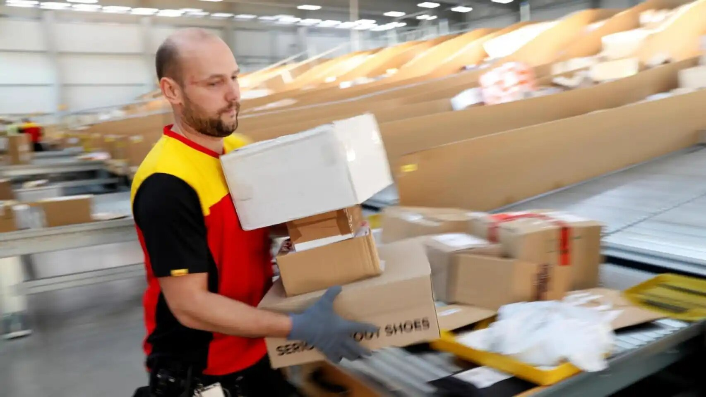
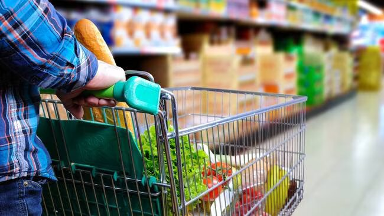
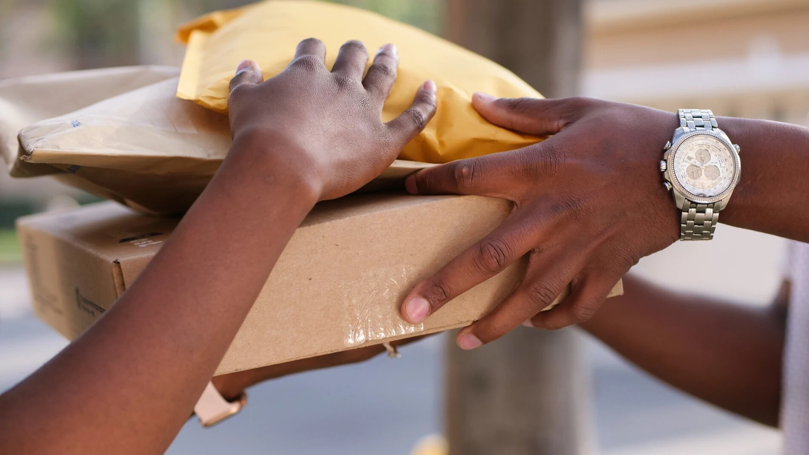

Inicio
En esta página web, recogeremos las consecuencias que tiene para el medio ambiente las compras que realizamos habitualmente a través de internet, con el fin de fomentar un uso responsable del e-commerce y fomentar alternativas. ¿Nos acompañas?

Consecuencias del e-commerce
Debido a la gran cantidad de compras online con sus respectivos pedidos, tenemos las siguientes consecuencias:
- Emisiones Contaminantes. Todos los productos necesitan ser transportados en avión, barco, camiones, furgonetas, etc. Estas producen CO2 y demás químicos contaminantes para la atmósfera.
- Problemas de movilidad urbana. Las empresas repartidoras hacen circular una gran cantidad de vehículos, priorizando la rapidez y sin optimizar la carga.
- Exceso de residuos. Los paquetes de los envíos al llegar a su destino se vuelven residuos sin mayor utilidad. Además, todos los productos devueltos generan que otra vez se inicie el proceso de envío a la inversa y en muchas ocasiones se destruyen sin aprovecharse los productos devueltos.
- Problemas sociales. Las malas condiciones laborales y la concentración del mercado en pocos actores aumentan las desigualdades sociales y la falta de transparencia en sus informes.

Datos
Impacto
En los últimos años, el número de personas que compran en línea se ha disparado a medida que Internet ha llegado a todos los rincones del mundo. Se calcula que durante 2018 hubo 1.800 millones de consumidores online, los cuales durante la presente década se han disparado por la pandemia.
| Estadísticas e-commerce | Global | Europa | España |
|---|---|---|---|
| Ingresos previstos | 3,42 billones de euros | 593.500 millones de euros | 30.710 millones de euros |
| Porcentaje de usuarios | 57.2% | 64.0% | 71.2% |
Noticias
La fiebre del comercio 'online': éstas son las desastrosas consecuencias de comprar desde el sofá
En 2018, se registraron 1.800 millones de consumidores en línea en todo el mundo, generando ventas de 2,8 billones de dólares. Se espera que estas cifras aumenten significativamente en los próximos años. Aunque las compras en línea son convenientes, tienen un gran impacto ambiental debido a las emisiones de CO2, especialmente por el transporte y los embalajes.
El uso excesivo de embalajes, incluyendo cajas de cartón y plástico, contribuye significativamente a la contaminación y los residuos sólidos. También se menciona la cultura del "unboxing", donde las marcas regalan productos envueltos en cajas llamativas a influencers para promocionarlos en las redes sociales, fomentando el consumismo y el desperdicio.
Las empresas, como Amazon e Ikea, están comenzando a utilizar vehículos de cero emisiones para reducir su impacto ambiental. Sin embargo, la entrega rápida el mismo día y las devoluciones frecuentes aumentan la cantidad de transporte y emisiones adicionales. Además, muchos consumidores no son conscientes del impacto ambiental de sus compras en línea.
La noticia destaca la importancia de hacer compras más sostenibles, considerando la necesidad real de los productos, eligiendo productos locales y ecológicos, y optando por puntos de recogida en lugar de entregas individuales para reducir el impacto ambiental.
Fuente: El Español
'Click&collect', la fórmula para hacer la compra con menor impacto medioambiental
El estudio "Foodelivery" realizado en Euskadi concluye que realizar pedidos de compra por internet y recogerlos a pie tiene el menor impacto ambiental. Según el estudio, esta modalidad de compra emite 16,3 gramos de CO2 por cada kilogramo de compra, debido a un menor consumo de energía en comparación con las compras en tiendas físicas. Además, el empaquetado utilizado para el transporte tiene una huella de carbono inferior al 3%. El estudio también revela que el 50% de los consumidores estaría dispuesto a cambiar sus hábitos si conociera el impacto ambiental de sus acciones. Se planea una campaña de concienciación basada en estos resultados.
Fuente: Cadena SER
La huella de las compras online, las devoluciones y el envío exprés en Navidad
El auge de las compras en línea en la temporada navideña ha llevado a un aumento en las entregas rápidas y devoluciones, lo que genera mayores emisiones de CO2. Un estudio español muestra que las devoluciones en línea alcanzan el 20-30%, frente al 6% en las tiendas físicas. Iniciativas como Entregasostenible.org buscan promover un consumo responsable, alentando la consolidación de envíos y la elección de opciones más sostenibles, así como favoreciendo productos locales, mientras se evitan las entregas urgentes de 24 horas.
Fuente: La Razón
